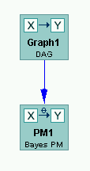

Destroying Contents of Boxes |
When you create a flowchart by placing boxes on the session workbench and drawing edges between them, you set up dependencies between the models that are in the boxes. For instance, if you place a Graph box and a PM box on the workbench, with an edge from the Graph box to the PM box, whatever model you put in the PM box will be dependent on the model you put in the Graph box. Let's say you put a DAG in the Graph box and a Bayes PM in the PM box, as follows:

Then if you change the DAG by adding a node, the Bayes PM is no longer valid, since it doesn't have the same variables as the graph. Tetrad in such a case will offer you choice to either have the Bayes PM automatically updated to reflect the new variable or to have the edge between the Graph box and PM box removed.
If you select "Execute," the Bayes PM will be replaced by a new Bayes PM that adds the new variable and copies over as much of the information from the old Bayes PM as possible.
It is possible that information may be lost in this process. For example, if you add an IM box to the above session and place a Bayes IM in this box, if you change the number of categories for some variable, some of the conditional probability tables for the Bayes IM will inevitably lose information.
Note that all models in boxes downstream will be revised when you click "Execute." This is because of dependencies created by arrows between boxes downstream.